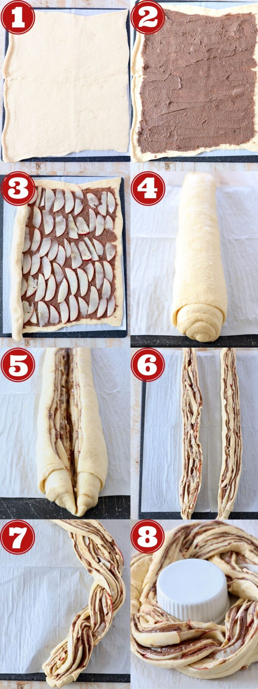

Cinnamon Roll Wreath with Apples Recipe
Ingredients you’ll need
- Crescent roll dough – you can use canned crescent roll dough, or sheets of canned crescent dough.
- Granulated sugar
- Brown sugar
- Ground cinnamon
- Unsalted butter – softened prior to making the recipe.
- Pazazz apples – sweet, tart and extra crispy apples.
- Cream cheese
- Milk
- Vanilla extract
- Powdered sugar
Step by step instructions
- 1. Roll out the crescent roll dough. Place a large piece of parchment paper on a flat work surface. Place both sheets of crescent roll dough slightly overlapping on the parchment paper and press the seams together.
- 2. Top with the cinnamon sugar butter. In a medium bowl, combine softened butter with granulated sugar, brown sugar and ground cinnamon. Spread this mixture evenly across the crescent roll dough.
- 3. Add the apples. Core and thinly slice one Pazazz apple, then place the slices on top of the cinnamon sugar butter in an even layer.
- 4. Roll it up. Roll the crescent roll dough up tightly over the apples and the cinnamon sugar butter into a tube.
- 5. Slice it in half. Use a sharp knife to slice lengthwise through the middle of the cinnamon roll tube.
- 6. Separate the two halves. Separate the two halves, and make sure the cinnamon butter and apples are facing up.
- 7. Braid them together. Carefully braid the two halves together, lifting one half over the other.
- 8. Form the wreath. Bring the two ends of the braid together to form the wreath. Bake at 350°F for 20-25 minutes.
source: https://whitneybond.com/cinnamon-roll-wreath/

